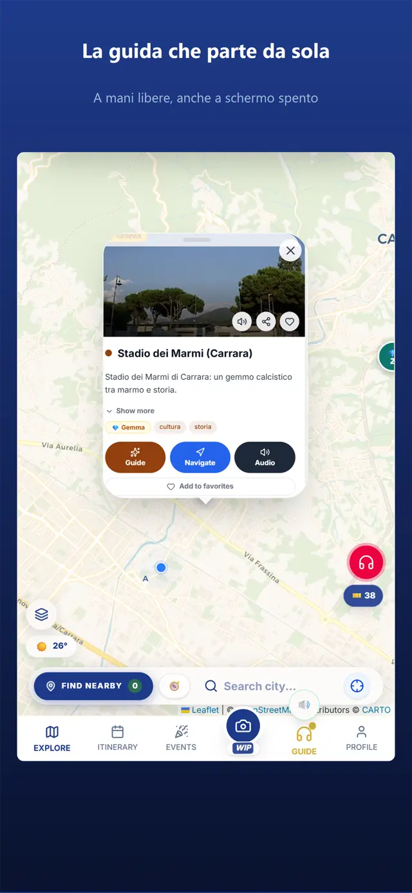
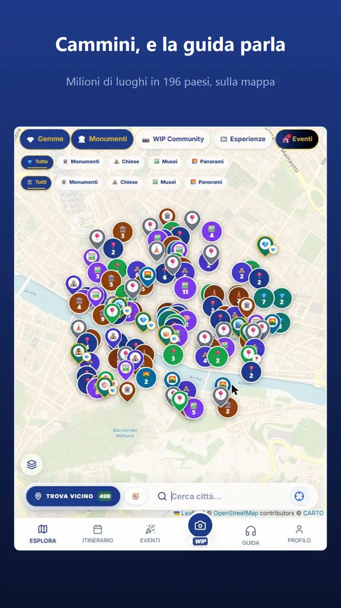
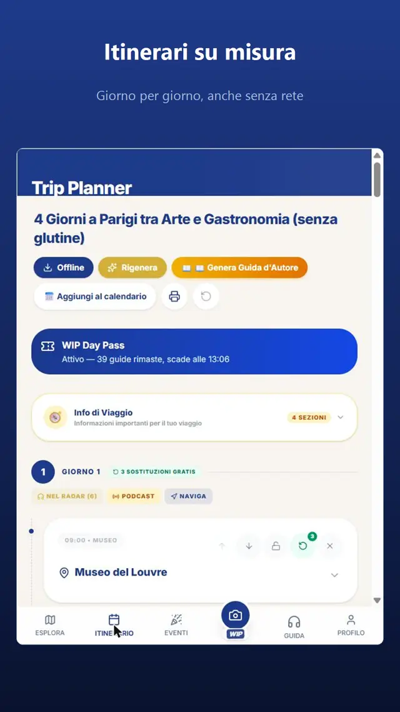

1
Parte da sola
Cammini, entri nel raggio di un luogo e la guida inizia a parlare. Niente da cercare, niente da premere: funziona anche a schermo spento.

WIP è l'audioguida geolocalizzata di oltre 9 milioni di luoghi in 196 paesi. A piedi, in auto, offline. In 7 lingue.
Cammini, entri nel raggio di un luogo e la guida inizia a parlare. Niente da cercare, niente da premere: funziona anche a schermo spento.

Monumenti, gemme nascoste, sentieri, location di film. In 196 paesi, sulla mappa, con foto e testi presi dalle fonti di quel posto.

Scarichi l'itinerario e la guida parla anche senza rete. In auto la voce arriva sugli altoparlanti, come un navigatore.

È una web app: si apre e funziona già, senza installare nulla.